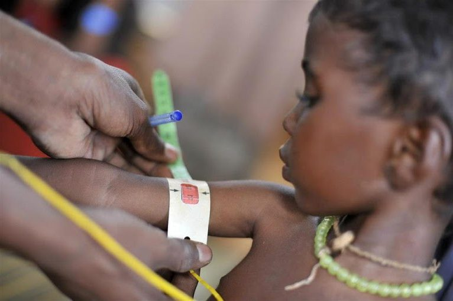

Éhezés felszámolása
Az alultápláltság és az éhezés nagyon nagy problémát jelent a szegény, fejlődő országokban. Azok a gyerekek, akik éheznek, kisebbek, törékenyebbek az átlagnál, sokkal könnyebben betegednek meg fertőző betegségekben. Egy gyermek fogantatása és két éves kora között kb. ezer nap telik el. Ez az az időszak, amikor az agy és a test a leggyorsabban fejlődik, ezért ilyenkor van leginkább szüksége a jó minőségű, tápláló ételre. Ezért a cél az, hogy minél több gyerek jusson megfelelő minőségű ételhez.
Eredmények, Kihívások
Az UNICEF alultápláltság elleni harcának eredményeképpen mintegy 100 millióval csökkentette az éhező gyermekek számát 1990 óta.
Felmérések alapján azonban a világon ma 165 millió öt év alatti kisgyermek alultáplált, és nem fejlődhet a korának megfelelően.
A legszegényebb országokban élők 15 százaléka, vagyis minden hatodik ember nem jut elegendő ételhez. Ez összesen 870 millió embert jelent, akik közül 100 millió öt éven aluli gyermek. Az alultápláltság minden ötödik gyermeket érint a fejlődő világban. A helyzet bizonyos régiókban kifejezetten kritikus. A Száhel-övezet és a Szomáli-félsziget jelenlegi élelmiszerválsága 23 millió embert érint, Dél-Szudánban pedig 250 ezer súlyosan alultáplált gyerek él. A nem megfelelően fejlődő gyermekek mintegy 80 százaléka a világ két nagy régiójában (Afrikában és Ázsia déli és délkeleti részein) él. Éppen ezért, az UNICEF is a kulcsfontosságú területekre összpontosít, és az eddigiek alapján már számos esetben ért el nagyszerű eredményeket: 11 országban, így Etiópiában, Haitin, Indiában, Nepálban, Peruban, Ruandában, a Kongói Demokratikus Köztársaságban, Srí Lankán, Kirgizisztánban, Tanzániában és Vietnámban is sikeres programok segítették elő megfelelő szakpolitikai és megközelítésbeli változásokat.
Innovációval az alultápláltság ellen
Az alultápláltság mérésére többféle mód van, és nagyon fontos szerepet bír a megelőzés és a kezelés terén is. 2014-ben például az UNICEF segítségével 589 000 dél-szudáni gyermeket vizsgáltak meg, hogy megállapítsák, fennáll-e az alultápláltság veszélye. Már nem csak a gyermek súlyát mérik az életkorhoz képest (“underweight”), hanem a magasságukat is a súlyhoz (“wasting”) és az életkorhoz (“stunting”) képest.
Az UNICEF kifejlesztett egy speciális mérőszalagot, amely segítségével a kisgyermekek felső karjára helyezve egyszerűen megállapítható, hogy egy gyermek megfelelően táplált-e vagy alultápláltság miatt azonnali kezelésre van szüksége. 115 mm alatti karkerületnél beszélünk súlyos alultápláltságról. A színskálát alkalmazó mérőszalag egyszerűbbé teszi az önkéntesek, dolgozók munkáját: nemcsak a diagnosztikában segít, de a megfelelő összetételű (megfelelő színű csomagolású) terápiás élelmiszer kiválasztását is meggyorsítja.
Az UNICEF az alultáplált gyermekek számára olyan terápiás élelmiszereket fejlesztett ki, amelyek vitaminok, ásványi anyagok kombinációját tartalmazzák. A magas tápanyagtartalmú élelmiszerek segítik a gyermekek immunrendszerének ellenállóvá tételét, mellyel sikeresen legyőzhetik a betegségeket. Egy zacskó ilyen élelmiszer megelőzheti a vérszegénységet vagy agykárosodást a gyermekeknél, melyek a súlyos tápanyaghiány miatt alakulhatnak ki.
Több formája is létezik.
További információk: Unicef